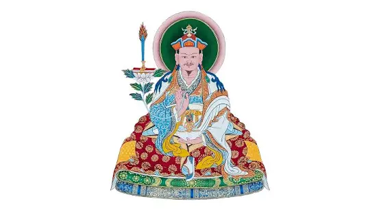

2020 校對版：2011/09/17-18 秋吉林巴伏藏：大圓滿三部
- 轉載自~作夢者班論壇
-
（連載 1）2011/09/17 01:30AM 秋吉林巴伏藏：大圓滿三部（Chokling Desum）（1）2020/08/21-26ed
-
01:24am, 我們在列繞林（Lerab Ling），我第一次來，非常高興，索甲仁波切邀請我來的，同樣我也想拜訪康卓仁波切（宗薩欽哲確吉羅珠的佛母）。我跟索甲仁波切很年輕我們就認識，都在宗薩欽哲確吉羅珠那裡得到教法。這裡之前我沒來過，無論如何我很高興來到這裡。因為很重要你們要知道，我們生在五濁惡世，教法變得更為重要，特別是金剛乘和大圓滿重要和精髓的教法，不只是為了現在還為了未來的世代。時間無常、情況總是多變對教法具有知識者要為未來世代做出貢獻，這很重要。這幾天我都在這裡參訪，我真的很開心。索甲仁波切要我給予教法，你們很幸運已經有了（索甲仁波切）上師和其教法，其實不是很必要。當我在宗薩欽哲仁波切（指宗薩欽哲確吉羅珠）得到許多不同教法，首先得到「朗代若些」所有灌頂和指導，隨後還有薩迦派中很重要的「基見達宋」的三系列教法，還有大圓滿教法，有秋吉林巴的伏藏法，與大圓滿古老教法有關，稱為大圓滿三部（心部、界部、口訣部），是最重要也最精髓的大圓滿教法。
-
一般若你接受寧瑪卡瑪（kama，教傳）的教法，寧瑪卡瑪首先有心部傳承和指導，有十八種不同特定大圓滿方式的本覺力灌頂（ripai tsal wang），然後還有界部所有系列的灌頂和指導，以及口訣部系列，所以〔得到這些教法〕要花很長時間。當我在學院時我得到這些教法，很幸運地我的老師千拉確吉沃瑟，給我開許去到其他地方領受重要教法，否則一般在學院裡不能外出。因此我從著名的內嘉仁波切那得到大圓滿心部、界部和口訣部，他是噶陀司徒仁波切的弟子，噶陀司徒仁波切是第一世蔣揚欽哲旺波的最出名的弟子之一，所以他是從那裡得到的。這〔大圓滿心部、界部和口訣部〕不是很容易，有點複雜，也需要更多時間，每天早上到傍晚持續一個月才領受完。但此秋吉林巴的伏藏則很濃縮，即使很濃縮但還是有很多正式指導和灌頂，也不是說很短。當我們契入精髓也有可能簡要些，所以就變得容易一點。我也給過這教法一次，也是專注在精華上，所以就變得比較簡短。我就是要來解釋此教法，我們應該來學習這，我是從欽哲仁波切確吉羅珠那裡得到的教法，覺得很重要，特別是〔索甲〕仁波切在這，你們的傳承追隨欽哲確吉羅珠，因此有所關連。
-
這教法的出處我寫下一點介紹，我稍微讀一下，也許你們就能比較瞭解。（藏文），秋吉林巴和蔣揚欽哲旺波和蔣貢康楚這三位都很有名，他們所有伏藏系列我們稱為「德（ㄉㄟˊ）薩」：「德瑪薩瑪」，秋吉林巴教法當中很有趣也很重要的一部就是「大圓滿三部」（Dzogchen Desum）的精要萃集。這裡我們所學習的，似乎有可能以簡單方式來修持精髓修法。否則當我們講到大圓滿心部，在大圓滿心部傳統我們必須要學四覺觀，有點像岡波巴的四瑜伽。首先是涅巴（nepa）而非寂止，這裡不稱瑜伽而稱覺觀，因為寂止基本上只是一種空性經驗，但透過此我們處於大圓滿狀態，就像它是種指授（introduction）。
返回主頁